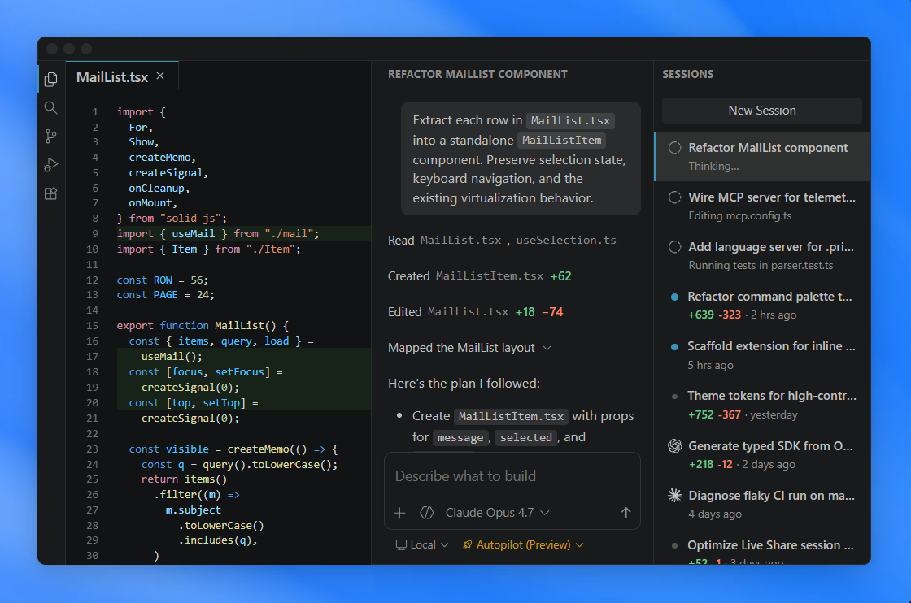
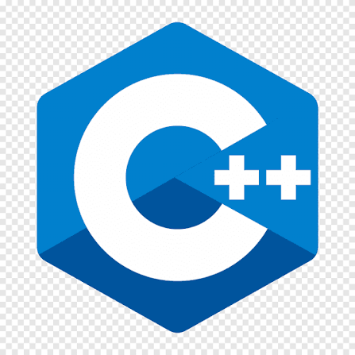
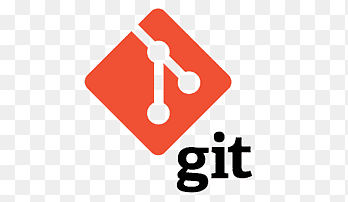
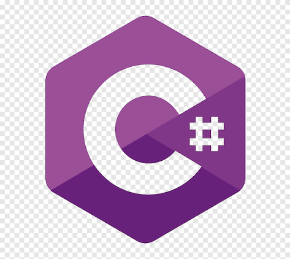

<html>
    <head>
    <link rel="stylesheet" href="style.css">
	<title>
		Visual Studio Code - Code Editor
	</title>
    </head>
</html>
<body>
    <div style="display: flex;justify-content: space-between;padding:10px;position:fixed;width: 99%;height: 0;">
	<div>
        
		<span style="color: aliceblue;font-weight: 500;font-size: 20px;padding-left: 5px;">Visual Studio Code</span>
		<span class="toplink">Docs</span> 
		<span class="toplink">Updates</span> 
		<span class="toplink">Blog</span> 
		<span class="toplink">API</span> 
		<span class="toplink">Extensions</span> 
		<span class="toplink">FAQs</span>
		<span class="toplink">Learn</span>
        </div>
		<div>
		<input type="text" placeholder="Search Docs" style="background-color: #0e0e0e;padding: 7px;">
		<button style="background-color:#0078d4;border:transparent;border-radius: 10px;color:white;font-size:15px;padding:7px;">Download</button>
        </div>
	</div>
    
	<br/>

	<div style="color:white;display: flex;justify-content: center;margin-top:50px;font-size: 60px;font-weight: 700;">The open source AI code editor</div>
<div style="display: flex;justify-content: center;font-size: 30px;color:white;margin-top: 25px;">Your home for multi-agent development</div>

<div style="display: flex;justify-content: center;">
	
	<div style="margin: 25px;background-color: white;padding: 8px 20px;border-radius: 10px;font-size: 20px;">
		
		Download For Windows</div>
</div>
<div style="display: flex;justify-content: space-between;margin: 0px 150px;color: white;">
<div>
	<h2>Agents that build for you</h2>
Hand off tasks to AI agents that autonomously <br> plan, make code changes, run commands, and <br>iterate until the job is done. <br>

For example, assign a CLI-based agent to triage <br> and fix bugs in the background, interact with <br> another agent to implement a feature using live <br> validation in the integrated browser, and <br> delegate a homepage redesign to a cloud agent <br> that opens a pull request for your team to review. <br>
</div>
<div>
	
</div>

</div>

<div style="display: flex;justify-content: space-between;font-size: 20px;margin: 100px;">
	<div class="card">
		<h2>Any agent, any model</h2>
Use the agent harness that fits your workflow. Run agents locally or in the cloud, with Copilot or third-party providers like Claude and OpenAI.

Choose from dozens of models across providers, from fast completion models to advanced reasoning models. Or bring your own key to use any model from any provider.

The same Copilot works across surfaces — VS Code, the Copilot CLI, GitHub.com, and mobile.
	</div>

	<div class="card">
		<h2>All your sessions, one view</h2>
Stay productive while multiple agents work on tasks in parallel. Track all your agent sessions from a single view, regardless of where they run.

Quickly filter and monitor sessions, or dive into an individual agent interaction, without switching to a different tool or terminal.
	</div>
<div class="card">
	<h2>Your rules, your agents</h2>
Ensure agents follow your practices and team workflows. Define custom instructions, add agent skills, or build custom agents tailored to your project.

Connect to external tools and services with MCP servers, or install agent plugins or extensions to expand the agent's capabilities.
</div>
</div>

<div style="display: flex;justify-content: space-between;margin: 100px;">
<div style="padding: 10px;margin:10px;color: aliceblue;width: 50%;;">
	<h2>Code with extensions</h2>
Extend your agents with tools from extensions and Model Context Protocol servers. Or, build your own extension to power your team's unique scenarios.
</div>
<div style="display: grid;grid-template-columns: auto auto auto;">
	<div class="gridcard" style="display: flex; justify-content: space-between ;"><div> </div>
<div>Python <br>
Adds rich language
support for Python</div>
</div>
	<div class="gridcard" style="display: flex; justify-content: space-between ;"><div> </div>
<div>Stripe <br>
Build, test, and use Stripe
inside your editor</div>
</div>
	<div class="gridcard" style="display: flex; justify-content: space-between ;"><div> </div>
<div>C/C++ <br>
Adds rich language
support for C/C++</div>
</div>
	<div class="gridcard" style="display: flex; justify-content: space-between ;"><div> </div>
<div>Jupyter <br>
Language support for
Jupyter Notebooks</div>
</div>
	<div class="gridcard" style="display: flex; justify-content: space-between ;"><div> </div>
<div>GitLens <br>
Supercharge your Git
experience</div>
</div>
	<div class="gridcard" style="display: flex; justify-content: space-between ;"><div> </div>
<div>C# Dev Kit <br>
Powerful tools for your C#
environment</div>
</div>
	<div class="gridcard" style="display: flex; justify-content: space-between ;"><div> </div>
<div>MongoDB <br>
Extension for the
@MongoDB agent</div>
</div>
	<div class="gridcard" style="display: flex; justify-content: space-between ;"><div> </div>
<div>GitHub Copilot for <br>
Azure br
Streamline the process of
developing for Azure</div>
</div>
	<div class="gridcard" style="display: flex; justify-content: space-between ;"><div> </div>
<div>Remote Development <br>
Open folders in a
container on a remote
machine</div>
</div>

</div>
</div>

</body>